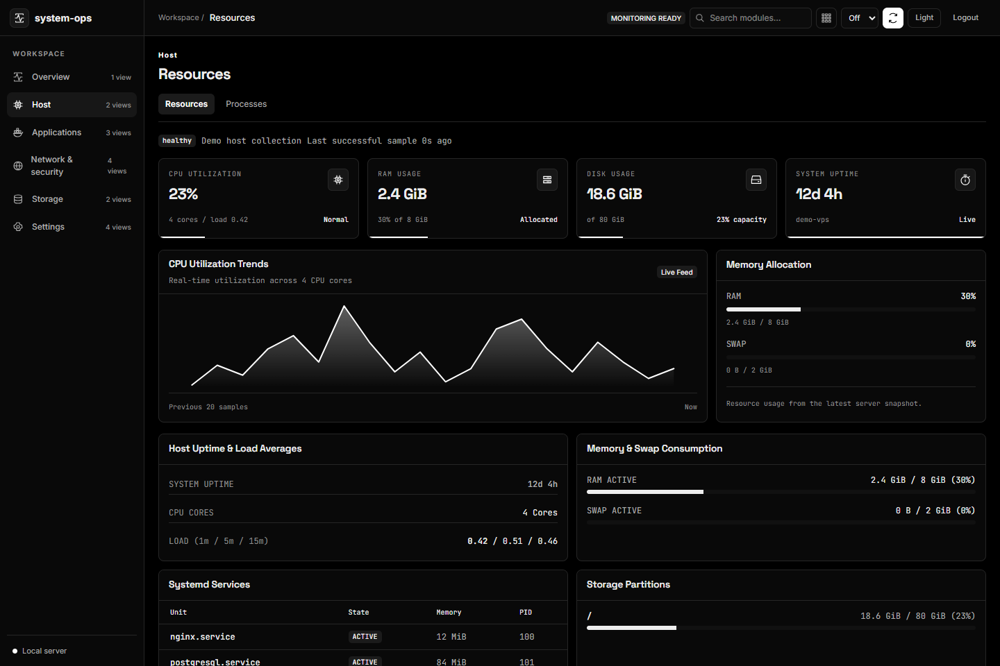

Understand your host
See CPU, memory, storage, and process usage. Follow systemd journals and inspect the services behind your applications.
Host visibilityBring host resources, applications, logs, and availability together. Understand what’s running on your server—and what needs your attention.

Works with the services you already run. Detected when available, enabled when you choose.
From a resource spike to a failing endpoint, start with a shared view of your host and the services around it.
See CPU, memory, storage, and process usage. Follow systemd journals and inspect the services behind your applications.
Host visibilityDiscover PM2 and Docker runtimes, inspect logs, and check database availability. Keep optional sources out of the way until you need them.
Explore integrationsConfigure HTTP and TCP checks, track incidents, and send webhook alerts. See observation coverage alongside the outcome.
Checks and alertsStart with the sources detected on your host. Choose what to monitor, inspect the evidence, and build a workspace that fits your setup.
Practical guides for your first install, the integrations you need, and the moments something doesn’t work.
Install the console, open it securely, and verify your first collection.
Follow the quick startSet credentials, select data sources, and enable optional integrations.
Configuration guideFind help with discovery, permissions, updates, and empty data.
Troubleshooting guideUse the native installer for host monitoring, or run the console in Docker with explicit mounts and a narrower host view.
Review the installer before execution. Node.js 24 is used by the project.
Read the docs# Download, inspect, then install
$ curl -fsSL https://raw.githubusercontent.com/dineshkorukonda/system-ops/main/scripts/install.sh -o /tmp/system-ops-install.sh
$ less /tmp/system-ops-install.sh
$ sudo bash /tmp/system-ops-install.sh$ cp .env.docker.example .env.docker
# Set credentials and mounted paths in .env.docker
$ docker compose --env-file .env.docker up -d --buildInspect the code. Improve a guide. Help test an integration. System Ops is MIT licensed and community maintained, with a clear place to ask questions and contribute.
A contribution guide, project rules, and validation requirements.
Practical docs and best-effort community support.
You operate your host, control your credentials, and choose your integrations.
More questions? Start with the guides or ask the community.
Find supportYes. The project’s source is MIT licensed. Dependencies retain their own licenses, and support is community maintained on a best-effort basis.
Native Ubuntu/systemd is the primary deployment for host monitoring. Docker includes the console with a narrower view of host services. The installation guide explains the differences.
Local checks cannot observe a complete outage of their own host. Use an independent observer when you need off-host availability evidence. Optional Prometheus and Grafana have their own resource costs.
Most integration views provide monitoring and log inspection. System Ops supports its own native updater and configuration workflows; it is not a general-purpose remote shell or service-control panel.
Start with one host. Connect the sources you need.